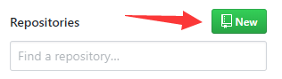
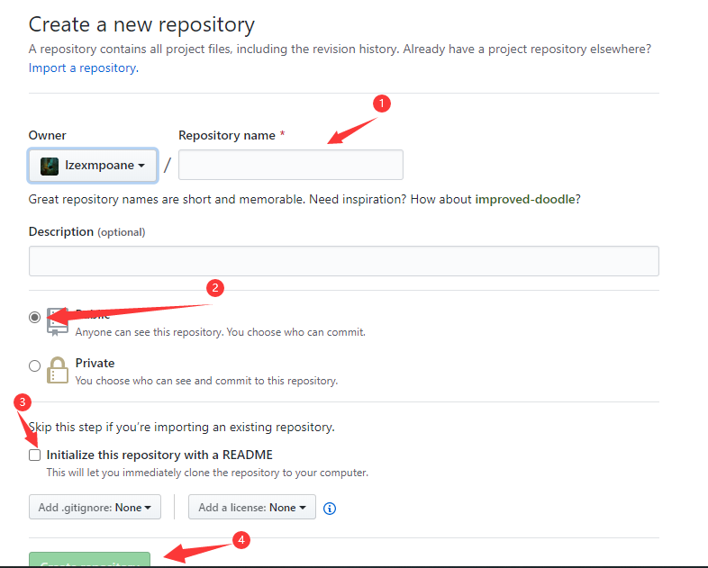
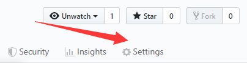
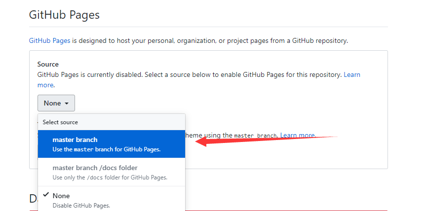
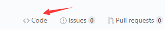
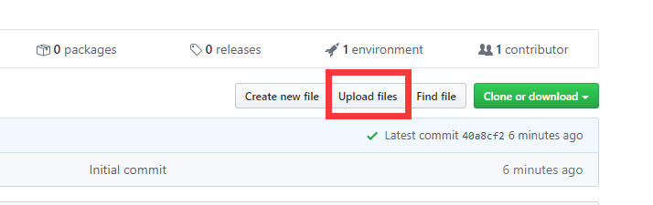
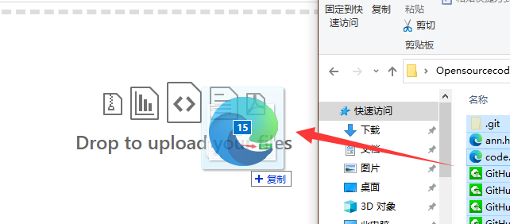
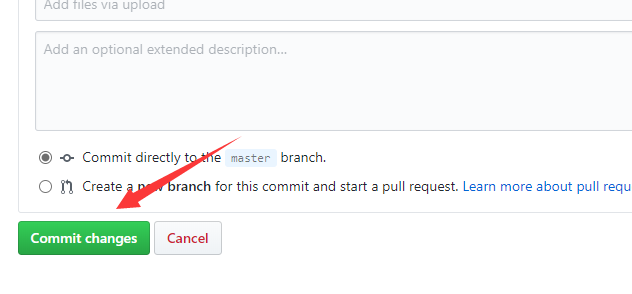
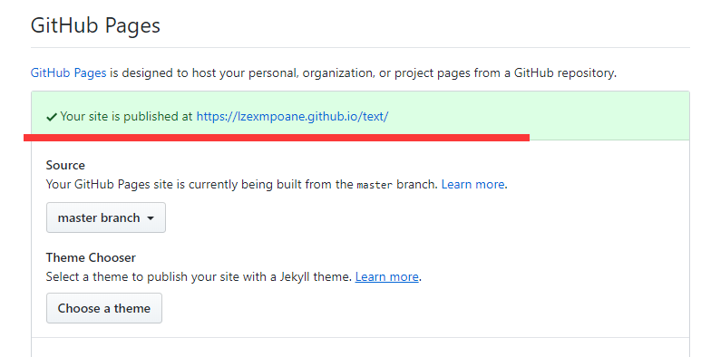

Open Source Code - 论坛 - E1
返回
[教程]服务器创建教程 日期：2020年3月29日21时54分
作者：lzexmpoane
注：GitHub其实不是只是用来做网站的，它还可以做很多很多的东西
在百度上搜索GitHub，或者点击此处到GitHub官方网站，注册一个账号（好像要梯子，不能注册的不用看了）。然后点“Repositories”旁边的“New”，

“Repository name”里填你希望网站要什么名字，“Description”是说明，可填可不填，下面选择“Public”和“Private”，“Public”是公开，“Private”是只有自己可见。我们这里选择“Public”。然后下面是是否添加README文件，可选可不选，我把它打钩了。然后点击“Create repository”确定

点击最上面的“Settings”

翻到下面找到“GitHub Pages”，把“Source”处的“None”改成“master branch”

然后回到“Code”

点击“Upload files”

把做好的网站托到“Drag file here to add them to your repository”

等待处理完成后点击“Commit changes”

之后等待GitHub响应（时间可能会有1~5分钟）
响应完成会到“GitHub Pages”，会有一个“Your site is published at xxxxxxxxxxxxxx”

点进去即可看到网页，你可以记录下网站的地址，以便再次查看。
如果要更改，下载一个GitHub Desktop，登入你的账号，clone项目，打开保存目录，直接更改，然后添加说明，保存后上传即可。
评论：